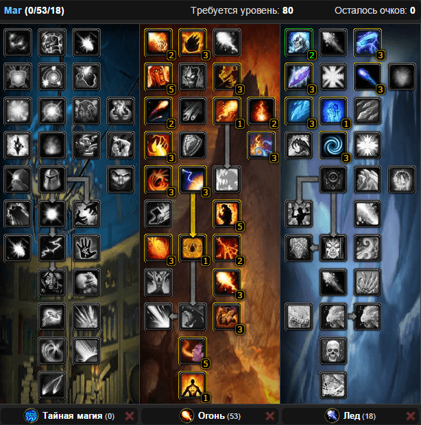
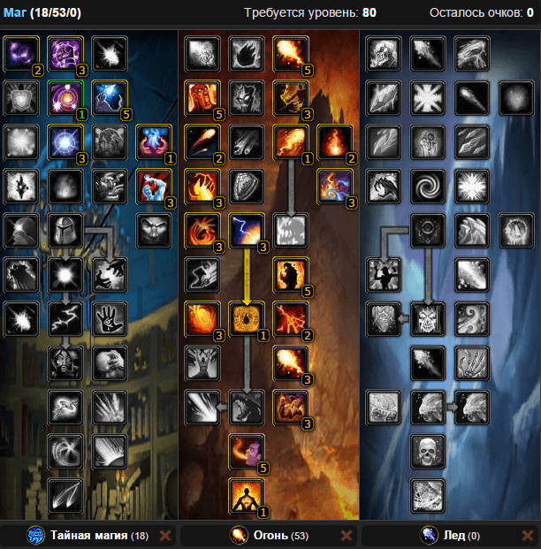
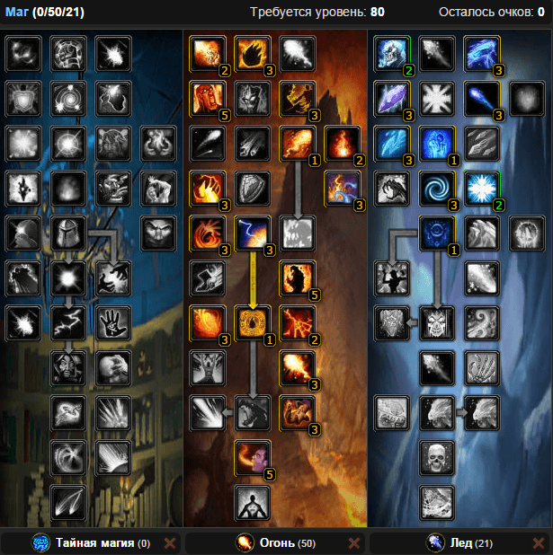

Одной из главных ошибок, которые допускаются в начале игры, является неправильный выбор расы. В результате, пришлось заново качать своего Фаер Мага, чтобы иметь нормальный расовый бонус.
«Гном» — имеет бонус повышающий интеллект на 5 единиц. Довольно частый выбор среди геймеров.
«Хуман» — имеет триньку, однако для мага от нее совсем толку нет. Имеет бонус в виде 3 процентов к вашему Духу.
«Тролль» — это для Фаер Мага на мой взгляд лучший выбор в ПвЕ. Тролли имеют свой именно расовый бурст. Причем который поднимает скорость перса на все 20 процентов, что для ПвЕ просто незаменимо. Это вообще лучший выбор среди рас WoW.
1. Таланты
Билд 1. ФФБ (frost fire ball).
Это универсальный билд, который подходит как для одетых игроков, так и для игроков, которые не собрали нормальный сет.

Билд 2. ФБ
Билд рассчитан для магов, которые одеваются на скорость. В этом случае этот билд будет выдавать вам огромный ДПС, но только тогда, когда ваш крит буден не ниже 45%.

Билд 3. ФФБ
Билд — спам самый эффективный. Он рассчитан на фуловых магов, которые собрали хороший сет и вкачали скорость и крит на максимум.

2. Характеристики
Первый билд — frost fire ball:
1.Меткость — кап хита 14%;
2.СПД (сила заклинаний) — набираем по максимуму;
3.Критический удар — 45% для хорошего дамага;
4.Скорость: для нормального дамага нужно 1000 — 1100 пунктов, но для отличного — нужно 1130.
Второй билд — ФБ:
1.Меткость — 17%;
2.СПД — набираем по максимуму, но софт кап равен 2800 пунктам;
3.Критический удар — 45%;
4.Скорость — хаст нужно набрать от 1000 до 1130 пунктов.
Третий билд:
1.Меткость — кап хита 14%;
2.СПД (сила заклинаний) — набираем по максимуму;
3.Критический удар — 45% для хорошего дамага;
4.Скорость: для нормального дамага нужно 1000 — 1100 пунктов, но для отличного — нужно 1130.
3. Способности
Раскаленный доспех — Наносит атакующим вас 170 ед. урона от огня за удар. Повышает рейтинг критического удара на 35% от показателя духа и снижает вероятность получить критический удар на 5%
Чародейский интеллект — Повышает интеллект цели на 60 на 1800 сек.
Ожог — Обжигает противника, нанося ему 376 — 445 ед. урона от огня
Стрела ледяного огня — Стрела ледяного огня наносит — ед. урона от ледяного огня, уменьшая скорость передвижения цели на 40% и нанося дополнительно 90 ед. урона от ледяного огня в течение 9 сек.
Живая бомба — Противник становится живой бомбой, получая 1380 ед. урона от огня в течение 12 sec. По прошествии 12 sec. или при рассеивании эффекта он взрывается, нанося 690 ед. урона от огня всем вашим противникам в радиусе 10 м.
Возгорание — При использовании повышает критический урон заклинаний магии огня на 50%. Каждое заклинание магии огня, достигшее цели, увеличивает вероятность нанесения критического урона от огня на 10%. Этот эффект длится, пока 3 заклинания огня не нанесут критический урон прямым действием
Огненная глыба — Бросает в противника огромную огненную глыбу, которая наносит 1190 — 1511 ед. урона от огня единовременно и 452 ед. урона от огня в течение 12 сек.
4. Ротация
Перед поем вешаем на себя «Раскаленный доспех» и «Чародейский интеллект»;
Сам бой начинаем с «Ожога», далее идет «Живая бомба». Потом прожимаем «Стрелы ледяного огня», пока не прокнет «Путь огня», затем — «Возгорание». Заканчиваем ротацию «Огненной глыбой».
Не забываем обновлять каждые 30 секунд «Ожог» и «Живую бомбу».
Маленький совет: если у вас в экипировке есть две и больше вещи Т10 уровня, то после окончания действия «Бомбы» лучше будет не обновить ее, а использовать «Огненную глыбу», потом три раза выпускаем «Стрелы огня», а затем уже новую «Бомбу»
5. Символы
Большие:
Символ живой бомбы — Периодический урон от заклинания «Живая бомба» теперь может быть критическим.
Символ раскаленного доспеха — Увеличивает рейтинг критического удара под действием заклинания «Раскаленный доспех» на 20% от показателя духа
Символ ледяного огня — Увеличивает начальный урон от заклинания «Стрела ледяного огня» на 2% и повышает вероятность критического удара этого заклинания на 2%
Символ огненного шара — Сокращает время произнесения заклинания «Огненный шар», на 0.15.2 сек., но лишает заклинание эффекта периодического урона. (Для Второго билда ФБ вместо Символ ледяного огня)
Малые символы на ДПС не влияют, поэтому подберите на свой вкус
Грудь — Свиток чар для нагрудника — Все характеристики VII
Наручи — Свиток чар для наручей — сила заклинаний III
Перчатки — Свиток чар для перчаток — сила заклинаний II
Пояс — Извечная поясная пряжка
Ноги — Сверкающая чародейская нить
Обувь — Свиток чар для обуви — ледопроходец
Одноручное — Свиток чар для оружия — сила заклинаний III, Свиток чар для оружия — черная магия — при недостатке хаста
Посох — Свиток чар для посоха — сила заклинаний II
7. Камни
Мета — Хаотический алмаз небесного сияния: +21 к криту и +3% критическому урону
Красные — Рунический багровый рубин +23 к силе заклинаний
Синие — Очищенный страхолит +12 к спд и +10 к духу
Желтые — Тревожный аметрин +12 к спд и +10 к скорости, Сокрытый аметрин +12 к силе заклинаний и +10 к рейтингу меткости, Могущественный аметрин +12 к силе заклинаний и +10 к рейтингу критического удара
8. Bis лист
Голова — Освященный капюшон волшебника крови
Шея — Багровое колье Кровавой королевы
Плечи — Освященные наплечные пластины волшебника крови
Спина – Плащ горящего заката
Грудь — Освященное одеяние волшебника крови
Запястья — Наручи пылающей ночи
Руки — Освященные перчатки волшебника крови
Пояс — Пояс сокрушающего хладного духа
Штаны — Запятнанные штаны разносчика чумы
Ботинки — Сапоги исследователя чумы
Кольца — Пепельное кольцо бесконечного разрушения, Второй перстень-печатка Валанара, Кольцо бесконечного лабиринта
Аксессуар 1 — Обугленная сумеречная чешуя
Аксессуар 2 —Талисман безымянного лича или Объект из другого измерени
Жезл — Шип для пронзания трупов
Оружие — Прилив Крови, клинок агонии Кел'Тузада и Катушка тенешелка
9. Бонусы от профессий
Наложение чар — даст 2 Чара на кольца по 23 к силе заклинаний.
Ювелирное дело — благодаря камням даст дополнительно бонус 48 силы заклинаний за счет 3 камней ювелира на 39 силы заклинаний.
Кожевничество — бонус 46 силы заклинаний за счет энчанта на наручи.
Портняжное дело — благодаря нашивке на плащ даст около 60 к силе заклинаний
Кузнечное дело — даст дополнительно 2 лишних сокета для камней, благодаря чему вы получите бонус в размере +46 силы заклинаний.
Алхимия — Бафф, элики и все те же +46 силы заклинаний
Начертание. Тоже +46 силы заклинаний.
10. Еда и Химия
Химия:
Настой ледяного змея — Увеличивает силу заклинаний на 125 на 3600 сек.
Мощный эликсир разума — Повышает интеллект на 45 на 3600 сек.
Зелье быстроты — Увеличивает рейтинг скорости на 500 на 15 сек.
Дикая магия — Увеличивает рейтинг критического эффекта заклинаний на 200 и силу заклинаний на 200 на сек.
Еда:
Рыбный пир — Восстановление 0 ед. здоровья и 19200 ед. маны в течение 30 sec. По истечении 10 секунд действия эффекта персонаж насыщается и его сила атаки повышается на 80, сила заклинаний – на 46, а выносливость – на 40, на 3600 sec.
Нежный стейк из черпорога — Восстанавливает 0 ед. здоровья в течение 30 sec. По истечении 10 секунд действия эффекта персонаж насыщается, сила его заклинаний повышается на 46, а выносливость на 40 на 3600 sec.
Если у вас хватает меткости, то это лучшие варианты. Если меткость слабовата, то используем еду на хит.
11. Аддоны
ForteXorcist — отображает таймеры заклинаний для всех классов
Power Source — при наведении на баф, дебаф в тултипе показывает ник персонажа который вас бафнул либо наложил на вас проклятие
Decursive проверяет какие виды дебаффов (отрицательных эффектов) вы можете снимать и при нажатии на мини фрейм, снимает тот или иной яд, болезнь, проклятие, магию и т.д…
RangeColors — подскажет если вы не достаете до цели
OmniCC — отображает время о завершении перезарядки заклинания на иконке скила
Omen — подскажет вам о смене танка
Doom CooldownPulse — по истечению перезарядки заклинания отображает его вспышкой посреди экрана
Recount — отобразит на сколько вы эффективны
12. Макросы
Макрос на «Величие разума» и «Огненную глыбу»
#showtooltip Огненная глыба
/cast Величие разума
/script UIErrorsFrame:Clear()
/script UIErrorsFrame:Show()
/cast Огненная глыба
Такой талант у Мага как «Величие разума» имеет превосходный ДПС КД. Чтобы удобнее было вам спамить глыбу, прописывайте данный макрос, который к тому же будет применять перед глыбой «Величие разума». Макрос можно прожимать и перед «Возгоранием», этим вы сможете поднять ДПС от «Воспламенения».
Макрос на «Возгорание»
Ваше любое заклинание будет прервано и Маг применит к цель «Возгорание», что удобно, когда его необходимо ментально пульнуть в цель.
#showtooltip Возгорание
/stopcasting
/cast Возгорание
Если вы постоянно используете глыбу, то чтобы от Воспламенения добиться большей мощи, прожимайте данный макрос.